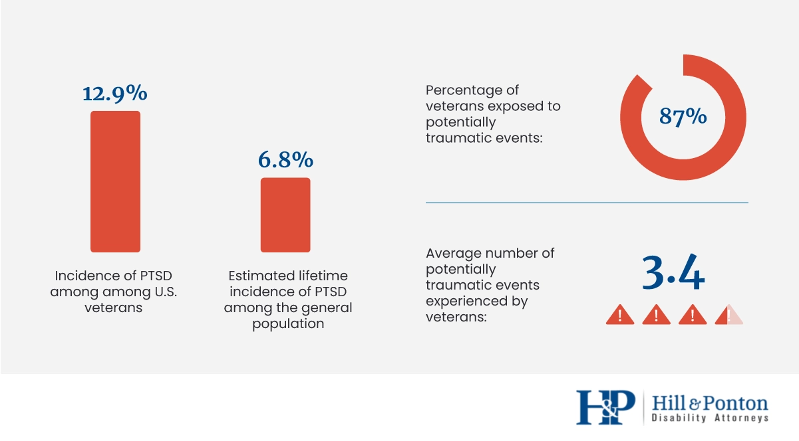

War is a good thing, said no one ever. But what if it's justified like people fighting for rights, or other valid reasons to start war? My answer is this, no war is good. Notice how the answer didn’t change, that’s because there is no need to wage wars between people. The military is one of the most un occupations that doesn’t need to exist. Then why does it exist, when did humans feel the need to arm themselves against other humans. I’m not trying to be the next Gandi or MLK but there is a time to start questioning these things because it is not normal for us to react so nonchalantly when we hear the news of kids and innocent people dying because of war, or even military soldiers, who leave their family in order to fight a war where they might not come back from. They say goodbye to their child without knowing if they will be able to say hello again. And what about the child who says goodbye to their parent and anxiously wait for their return just for another soldier to come and tell them that they aren’t coming home anymore. For a clearer understanding of my point there is an article of The New York Times titled "Abu Bakr al-Baghdadi, ISIS Leader Known for His Brutality, Is Dead at 48".
Link to articleWhile the person being killed is a threat to other peoples' lives you can't ignore the innocent lives lost because of the commotion this generated. And that's the sad reality of war, there are many kids that won't grow up because of war and their deaths are justified because it is for the greater good. It is important to note that the reason why these wars are waged are a separate factor that usually determines if a war is justified or not, but that ignores the point that war itself is terrible, yes at the end we'll be glad that certain wars ocurred but the fact that is ignored is the innocent people that died in the wars. Not just the soldiers.
That being said we should take a look at arguably the biggest victims the soldiers:
 This graph from Hill and Ponton is the perfect example of the impact of war on soldiers who participate in them. Now these percentages may not seem as much but lets take a look at the numbers themselves. According to Statista, in 2019 there were more than 17 million veterans in the United States. With that in perspective we can do the math. Roughly 2.2 million veterans have suffered from PTSD from the events they've endured while on work. Out of those 150k veterans suffer it for a lifetime. 150k people will never get over the trauma created by Wars. But the most alarming facts from those graphs are the fact that 14.8 million veterans are exposed to traumatic events and on average veterans endure 3.4 traumatic events in their lifetime. That is only counting the US, imagine adding to that tall the war veterans for other countries. It is also important to note the relationships created while being deployed and the pain of seeing those close to you die in the battlefield is a sentiment a lot of people in the military know all too well.
The term deserter is attributed to a soldier who abandoned his position without authorization therefore deserting the position (empty space). It's often attrbuted to people who perform this action during war in order to avoid a hazardous activity. The reasons why a veteran would desert his or her position may vary but the punishment if caught more often than not is the same. The usual punishment for a deserter during a war is death. In Japan, during World War 2 they used a group soldiers and broke them mentally in an effort to convince them to die for "their country", that group would fly planes that weren't given enough fuel to return because they were expected to crash the plane into whoever was considered their enemy, they were called kamikazes. Some Kamikaze pilots understandably didn't want to give away their life and ended up becoming deserters. If a deserter returned to Japan they would undergo harsh punishements and bring dishonor to their family but they wouldn't escape their fate that easily because after receving physical or mental punishment they would be forced to carry out the mission as many as 8 more times, they would not be executed unless they desert for a 9th time. While they are sworn into their duty there are aspects that veterans aren't prepared for, it's not the same reading an article on how many people died during a war in x country than actually seeing how those people died, that's what veterans experience and that experience weighs heavy on their conscious. The pain of knowing what has been done becomes too much to bear and some of them end up becoming deserters because of it. That's just one valid reason to become a deserter, there are plenty more. However thos